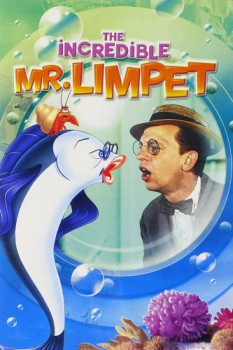

Country:United States, 99 minutes
Spoken languages:English, German
Genres:Animation, Family, Comedy, War, Fantasy
Director(s):Arthur Lubin
Writer(s):Jameson Brewer, John C. Rose, Theodore Pratt
Video Codec:Unknown
Number: 1601

Certification:
Storyline:
Milquetoast Henry Limpet experiences his fondest wish and is transformed into a fish. As a talking fish he assists the US Navy in hunting German submarines during World War II.
Cast:
Don Knotts (as Henry Limpet), Carole Cook (as Bessie Limpet), Jack Weston (as George Stickel), Andrew Duggan (as Harlock), Larry Keating (as Admiral P.P. Spewter)
Medium: Media file,
Location: D:\Disney\Don Knotts\The Incredible Mr. Limpet (1964).mp4
Loaned: No
Aspect ratio: Unknown